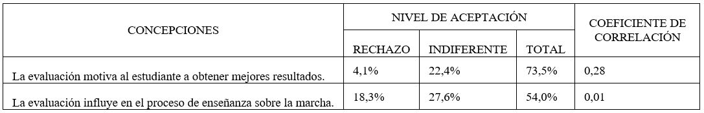
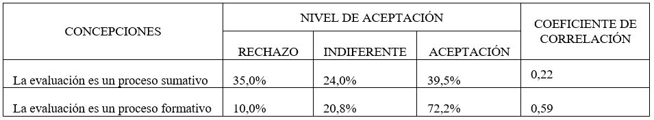
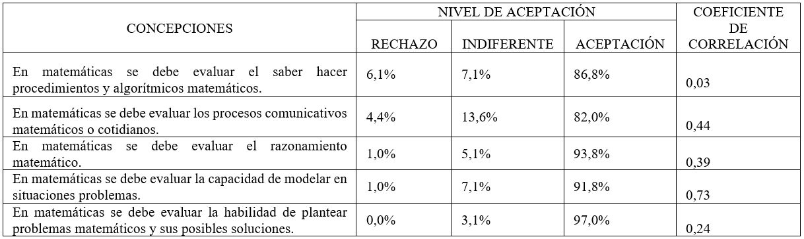
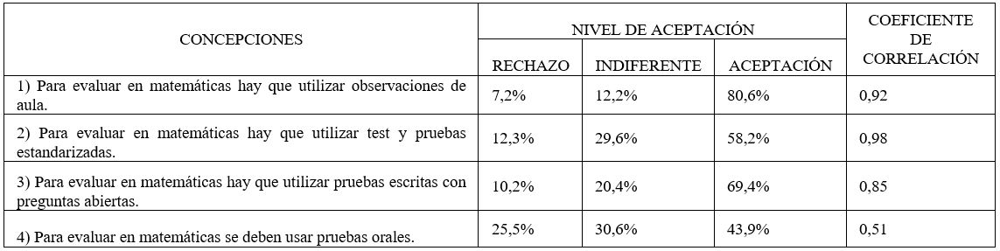
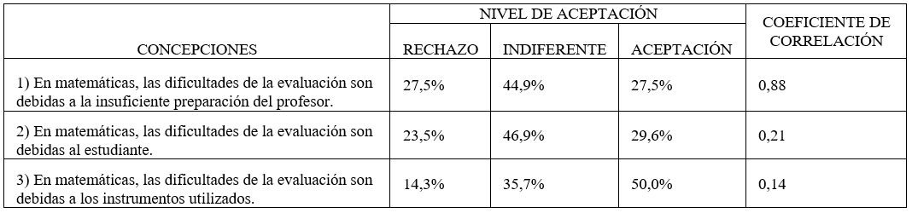

Introducción
El aprendizaje de cualquier concepto
matemático, lleva la superación de obstáculos
relacionados con el proceso de enseñanza o con
las capacidades propias del estudiante o con la
complejidad del concepto a aprender (Tall, 1991), En
cuanto al primer tipo de obstáculo, la evaluación del
aprendizaje se impone como objeto de estudio en las
últimas décadas. Al hablar de obstáculos referentes a
la evaluación del aprendizaje en matemáticas, se alude
a las concepciones sobre la práctica, instrumentos y
procesos que se utilizan al evaluar. Las concepciones
de los docentes, entendidas como un conjunto de
creencias e ideas que se construyen a partir de las
experiencias académicas de los docentes (Hidalgo &
Murillo, 2017), influyen de manera significativa en
la formación de los estudiantes (Hidalgo & Murillo,
2017).
Teniendo en cuenta lo anterior, el hecho que los
estudiantes colombianos evidencien un nivel crítico
en torno al aprendizaje de las matemáticas (De
Zubiría, 2015; Borrero, 2020) invita a reflexionar
sobre cuáles son las concepciones sobre la
evaluación en matemáticas que tienen los docentes
colombianos. La atención de este artículo recae en
las concepciones de los estudiantes en formación
docente, particularmente, en las siguientes
cuestiones: ¿cuáles concepciones se forman en
los estudiantes en formación docente durante su
preparación profesional? ¿Estas concepciones
cambian de acuerdo al ciclo de formación académica
en la que se encuentra? Se plantea como objetivo
de la investigación: analizar los posibles cambios
de concepciones que experimentan los docentes
en formación sobre la evaluación en matemáticas
durante su preparación profesional.
Para responder a las cuestiones anteriores
se definen cinco categorías donde se marcan las
diferentes concepciones y que serán objeto de
estudio en esta investigación, estas son: a) Influencia
de la evaluación en la educación. b) Objetivos de
la evaluación. c) Objetivos de la evaluación en matemáticas. d) Instrumentos de evaluación y e)
Responsabilidades en la evaluación.
En cuanto a la primera categoría, las
diferentes investigaciones evidencian dos tipos de
concepciones, una de estas hace referencia a que
la evaluación es un proceso que informa al docente
sobre los logros alcanzados por sus estudiantes y
gracias a esto se puede modificar su didáctica (Ramos
& Casas, 2018); por otro lado, se encontró que los
estudiantes que consideran la evaluación como un
aspecto importante en su proceso de aprendizaje
obtienen mejores resultados (Basso, 2011). Así,
en esta categoría las concepciones a destacar es la
evaluación como proceso influyente tanto en los
métodos de enseñanza como en los de aprendizaje.
En la segunda categoría se evidencia el
dominio de dos concepciones sobre los objetivos de
la evaluación, la primera se refiere a la evaluación
sumativa, concepción que se caracteriza por ser
utilizada por los docentes como instrumento
finalizador donde no se hace reflexión e interpretación
de los resultados obtenidos (Conde-Carmona,
2019), la segunda concepción se caracteriza sobre
la evaluación sumativa en la cual los procesos
de retroalimentación de resultados cobran una
gran importancia para un mejoramiento continuo
(Paternina & Quessep, 2017).
La tercera categoría muestra los tipos de
conocimientos que los docentes suelen evaluar, en
las investigaciones consultadas se identificaron
principalmente la evaluación de conocimientos
procedimentales y conceptuales. Chávez y Martínez
(2018) afirman que existe una fuerte tendencia
en evaluar los conocimientos procedimentales
en matemáticas, aun si los problemas propuestos
exigen conocimientos más avanzados. Por otro lado,
Moreno y Ortiz (2008) encontraron que los docentes
dan más importancia a evaluar conocimientos
conceptuales por encima de los procedimentales.
Es preciso denotar que estos conocimientos
encontrados no son los únicos que se evalúan en matemáticas, en Colombia el Ministerio de
Educación Nacional (Mineducación, 2006) define
que en matemáticas se deben evaluar 5 procesos
matemáticos que permitirán al estudiante alcanzar
competencias superiores, estos procesos se definen
en los Estándares Básicos de Competencias así:
a) formulación, comparación y ejercitación de
procedimientos. b) Razonamiento. c) Comunicación.
d) Modelación. e) formulación, tratamiento y
resolución de problemas.
En cuanto a los instrumentos que los docentes
utilizan al evaluar en matemáticas se encontró que
la concepción persistente es que se debe evaluar por
medio de pruebas escritas en especial que sean con
preguntas cerradas (Paternina & Quessep, 2017),
Por otro lado, Dolores y García (2016) encontraron
que los docentes evalúan en gran medida mediante
pruebas orales, esto hace que se evalúen otros
tipos de conocimiento como los comunicativos y
argumentativos.
Para finalizar, la quinta categoría se refiere
a la concepción sobre quien es el responsable de
las dificultades en el proceso evaluativo, estas
concepciones son importantes debido a que hace
consciente o inconsciente a cada actor educativo
sobre el proceso educativo. Con respecto a esto,
Gamboa y Pedrero (2010) encontraron en un estudio
que los estudiantes mayormente son conscientes
de que sus esfuerzos marcan su éxito o fracaso
académico; por otro lado, Alvarado et al. (2012)
afirman que “los alumnos vinculados en el tiempo
con profesores de buen desempeño se asocian con
un mejor resultado en las pruebas … que aquellos
vinculados a docentes de peor desempeño” (p.37),
además también reconocen que los diferentes tipos
de instrumentos utilizados influyen en los resultados
evaluativos. Por lo anterior, en los antecedentes se
evidencia concepciones donde la responsabilidad
se asocia a los estudiantes, la preparación de los
docentes y los instrumentos utilizados.
Finalmente, estas categorías permiten esbozar
de manera general las concepciones que persisten actualmente en los docentes a nivel internacional, sin
embargo, esta investigación además de identificar
las concepciones en los docentes en formación,
también pretende reconocer si existen cambios en
estas concepciones con respecto al nivel formativo
en que se encuentran los estudiantes en formación.
Método
Esta investigación se enmarca bajo un enfoque
Cuantitativo ya que esta se caracteriza por seguir una
serie de pasos o procesos para comprobar la veracidad
de ciertas suposiciones (Hernández-Sampieri &
Mendoza, 2018), lo cual hace que la información
y datos recogidos se sometan a un tratamiento y
análisis rigoroso. En cuanto al nivel de investigación
se adoptó uno descriptivo-correlacional, ya que con
este permite la identificación de las concepciones
presentes en la muestra y además correlacionar estas
con el ciclo formativo en el que se encuentran los
docentes en formación.
Población y muestra
La población de este estudio se limita a
estudiantes en formación docente del programa de
Licenciatura en Matemáticas de una universidad
del nororiente colombiano. Para la selección de la
muestra se utilizó un muestreo no probabilístico por
conveniencia, donde se seleccionó a 98 estudiantes
de dicho programa académico pertenecientes
los diferentes ciclos formativos que presenta su
currículo.
Herramientas
Para la recolección de los datos se diseñó un
cuestionario dividido en dos secciones. La primera
sección corresponde al perfil sociodemográfico
del estudiante y en la segunda sección se plantea
diferentes ítems agrupados en 5 categorías de
análisis que fueron construidas a partir de la revisión
bibliográfica realizada. En cuanto al análisis de los
datos se usó el software SPSS v25.
Procedimiento
Etapa 1: Análisis preliminar: En esta etapa, se
hace un estudio de antecedentes que apoyen y den
base para la construcción conceptual e histórica a la
presente investigación, producto de esta búsqueda
resultan las 5 categorías de análisis descritas
anteriormente.
Etapa 2: Construcción y validación de
instrumento: Este proceso se inicia con la
construcción del cuestionario basado en los utilizados
en investigaciones como la de Basso (2011); Gil et
al. (2002) y Ramos y Casas (2018), posteriormente
se realiza un proceso de validación de juicios por
expertos, tomando como referente el modelo de
Lawshe (1975) modificado por Tristán (2008) y
finalizar con determinar el nivel de confiabilidad por
medio del coeficiente Alpha de Cronbach.
Etapa 3: Aplicación: Esta etapa hace referencia
al método de la recogida de datos. Para la aplicación
del instrumento fue necesario elaborar el cuestionario
en formularios de Google, ya que, la recogida de
datos se dio de manera virtual, debido a la emergencia
sanitaria por el COVID-19. El cuestionario fue
remitido a los estudiantes matriculados en el
programa académico y se estableció una fecha límite
para la recepción de respuestas.
Etapa 4: Análisis de datos: En esta etapa se
utiliza el software SPSS v25, para hacer un análisis
Univariante inicial con el fin de identificar las concepciones dominantes en los encuestados en
cada categoría, posteriormente se tienen en cuenta
las concepciones encontradas y el ciclo formativo
en el que se encuentran los estudiantes para aplicar
el coeficiente de correlación de Pearson de Chicuadrado.
Resultados y Discusión
De acuerdo al análisis realizado, a continuación,
se presentan los resultados que interesan a
esta investigación de acuerdo a cada categoría,
destacando las principales concepciones halladas
en los encuestados y su correlación con el ciclo
formativo en el que se encuentran estos.
Concepciones asociadas a la influencia de la evaluación en la educación
En esta categoría, se definieron dos subcategorías
que engloban las concepciones evaluadas, la primera
hace referencia a la idea de que la evaluación influye
directamente en el aprendizaje de los estudiantes
y la segunda refleja que este proceso influye en la
enseñanza.
En la Tabla I, se evidencia que en las dos
concepciones definidas no existe un dominio
total de aceptación (26,5% y 46,0% de aceptación
respectivamente) por parte de los encuestados,
haciendo que los docentes en formación conciban la
evaluación como un proceso ajeno e influyente en la
educación.
Tabla I: Correlación entre concepciones relacionadas a la influencia de la evaluación y el ciclo
formativo

Ahora bien, en la Tabla I se evidencia que la
concepción referente a que la evaluación influye
en el proceso de enseñanza tiene un coeficiente
de correlación de 0,01 lo cual indica que existe
una correlación entre está concepción y el ciclo
formativo del estudiante, es decir, los encuestados al
inicio de su formación conciben la evaluación como
un proceso independiente de la enseñanza pero a
medida que estos avanzan en el programa académico
conciben que los resultados evaluativos modifican
los procesos de enseñanza sobre la marcha.
La apropiación de esta concepción es muy
importante, debido a que esta permite que el
docente sea consciente y reflexivo sobre su práctica
pedagógica y la someta a cambios cuando es
necesario para el mejoramiento continuo, así como
lo afirma Pérez et al. (2017) “la evaluación permite
al docente adecuar el currículo y los objetivos
iniciales, y le otorgan la posibilidad de ajustar el
proceso progresivamente.” (p. 269).
Concepciones asociadas a los objetivos de la evaluación
De acuerdo a los diferentes ítems propuestos
se definieron dos subcategorías que engloban los objetivos de la evaluación en matemáticas, la
primera es que la evaluación se concibe como un
proceso sumativo y la segunda que esta es un proceso
formativo.
En la Tabla II, se observa que el 72,2% de
los encuestados aceptan la evaluación como un
proceso formativo, mientras que un 39,5% de estos
aceptan las concepciones asociadas a la evaluación
como proceso sumativo, ante este panorama, se
puede afirmar que los estudiantes en formación
docente conciben la evaluación como un proceso
de retroalimentación contante para la formación
y mejoramiento continuo, sin rechazar del todo
aspectos sumativos de la evaluación.
Lo anterior supone una contradicción ya
que las dos concepciones están presentes en los
estudiantes, generando un problema como lo afirma
Mellado-Hernández y Chaucono-Catrinao (2016)
“cuando existen ambigüedades en las concepciones
pedagógicas… generalmente las prácticas de aula
resultan asociadas a un enfoque tradicional de
enseñanza” (p.12).
Tabla II: Correlación entre concepciones relacionadas a los objetivos de la evaluación y el ciclo
formativo

En cuanto al coeficiente de correlación, se
observa que ninguna de las dos concepciones
descritas está correlacionada con el ciclo formativo
de los encuestados, es decir, no existen cambios
significativos en las concepciones de los estudiantes
de los primeros semestres y los de los últimos.
Concepciones asociadas a los objetivos de la evaluación en matemáticas
Según investigaciones previas, en matemáticas
los docentes se limitan a evaluar dos tipos de
conocimientos -los procedimentales y conceptualesChávez y Martínez (2018); Preiss, Larraín y
Valenzuela (2011) y Conde-Carmona (2019). Sin
embargo, esta investigación no se limitó a presentar
estos conocimientos como los únicos a evaluar en matemáticas, sino que se propuso que los encuestados
consideraran la pertinencia de la evaluación de los
cinco procesos matemáticos establecidos por el Ministerio de Educación Nacional (Mineducación).
En la Tabla III, se evidencia que los cinco procesos matemáticos tuvieron más del 82% de aceptación
por parte de los encuestados, aspecto de gran importancia debido a que al evaluar estos procesos habrá
mayor seguimiento de las diferentes competencias desarrolladas por los estudiantes.
Tabla III: Correlación entre concepciones relacionadas al objetivo de la evaluación en matemáticas
y el ciclo formativo

En cuanto al coeficiente de correlación, se
observa que la concepción relacionada con evaluar
los conocimientos procedimentales tiene un
coeficiente de correlación de 0,03, indicando que
esta concepción presenta mayor aceptación entre
los estudiantes de los primeros ciclos y disminuye
a medida que los estudiantes avanzan en formación
profesional.
En contraste Preiss et al. (2011) afirman que
en matemáticas los docentes suelen evaluar los
conocimientos procedimentales, haciendo que
los estudiantes formen una concepción de que
las matemáticas es saber operar, de ahí que los
estudiantes al iniciar su formación docente conciban
evaluar estos conocimientos en mayor medida.
Concepciones asociadas a los instrumentos de evaluación
En esta categoría se muestran los posibles
instrumentos a utilizar al momento de evaluar en
matemáticas, diferenciando instrumentos de acuerdo
a su funcionalidad como los son las pruebas escritas
o las observaciones de aula.
En la Tabla IV, se evidencia que el tipo de
instrumento con mayor aceptación para evaluar en
matemáticas es la observación de aula con un 80,6%
esto indica que los docentes en formación consideran
importante las actitudes y actividades mostradas por
los estudiantes en la clase, ya que, “Indudablemente
dependiendo de qué se desee evaluar se escogerá el
mecanismo de cómo hacerlo” (Trelles et al., 2017,
p. 44).
Tabla IV. Correlación entre concepciones relacionadas a los instrumentos de evaluación y el ciclo
formativo

En cuanto al coeficiente de correlación, se
observa que ninguna de las concepciones planteadas
tuvo un índice dentro de los parámetros para indicar
una relación entre las variables. De ahí que se afirme
que los estudiantes para docentes no presentan
cambios en sus concepciones con respecto a qué tipo
de instrumentos utilizar al evaluar en matemáticas
durante su preparación formativa.
Concepciones asociadas a las responsabilidades en la evaluación
EL proceso evaluativo en educación, es una
actividad que se ha convertido en una herramienta
Tabla V. Correlación entre concepciones relacionadas a responsabilidades en la evaluación

En cuanto a la correlación, se evidencia que
ninguna de las concepciones pertenecientes a
esta categoría muestran una relación con el ciclo
formativo de los encuestados, es decir que el 50%
de los encuestados tienen una concepción arraigada
con respecto a los instrumentos como principales
responsables de los resultados evaluativos, sin
importar el nivel formativo de los encuestados.
Conclusiones
De acuerdo al objetivo planteado, se observa
que en general las concepciones presentes en
los docentes en formación no están relacionadas
con el nivel formativo de estos, a excepción de la
concepción en la que se concibe que en matemáticas
se deben evaluar los conocimientos procedimentales y la concepción en la que se plantea la evaluación
como un proceso influyente en la enseñanza. Dichas
concepciones presentan un nivel de aceptación en
los estudiantes de primeros semestres acordes a una
evaluación de tipo sumativa, ya que la influencia de
este proceso en la enseñanza no es aceptada con un
alto porcentaje y por el contrario un gran porcentaje
de los encuestados le dan una alta aceptación a
evaluar procedimientos. Esto permite afirmar que los
estudiantes que ingresan a formarse como docentes
vienen influenciados por una educación tradicional,
pero a medida que reciben su formación docente
estas concepciones las van erradicando.
Referencias
Alvarado, M., Cabezas, G., Falck, D., & Ortega,
M. E. (2012). La evaluación docente y sus
instrumentos: Discriminación del desempeño
docente y asociación con los resultados de los
estudiantes. Centro de Estudios MINEDUC/
PNUD. Recuperado de https://www.estudiospnud.cl/publicaciones/la-evaluaciondocente-y-sus-instrumentos-discriminaciondel-desempeno-docente-y-asociacion-con-losresultados-de-los-estudiantes/
Basso, A. (2011). Concepciones de alumnos
de secundaria respecto de la evaluación en
Matemáticas. Estudio de la incidencia de
un proceso de instrucción (tesis doctoral).
Universidad de Salamanca, España.
Borrero, O. F. (2020). Análisis del nivel de
calidad educativo en Colombia, a partir de los
resultados de las pruebas PISA en el periodo
2012-2018. Recuperado de: http://hdl.handle.net/10654/35718.
Chávez, Y., & Martínez, F. (2018). Evaluar para
aprender: hacer más compleja la tarea a los
alumnos. Educación matemática, 30(3), 211-
246. https://doi.org/10.24844/EM3003.09
Conde-Carmona, R. J. (2019). Relación de
la evaluación y la práctica pedagógica docente: mirada de docentes de matemáticas
colombianos. Saber, Ciencia y Libertad, 14(2),
273-282. https://doi.org/10.18041/2382-3240/saber.2019v14n2.5892
Gil, F., Rico, L., & Fernández, A. (2002).
Concepciones y creencias del profesorado de
secundaria sobre la evaluación en matemáticas.
Revista de Investigación Educativa, 20(1), 47–75. Recuperado de https://revistas.um.es/rie/article/view/97441
De Zubiría, J. (2015). Hacia un acuerdo nacional
para mejorar la calidad de la educación básica y
media en Colombia. Revista Educación y Ciudad,
(19), 39-56. https://doi.org/10.36737/01230425.n19.118
Dolores, C., & García- García, J. (2016).
Concepciones de Profesores de Matemáticas
sobre la Evaluación y las Competencias.
Números, 92, 71-92.
Hernández-Sampieri, R. & Mendoza, C. (2018).
Metodología de la investigación. Las rutas
cuantitativa, cualitativa y mixta. Ciudad de
México: Editorial Mc Graw Hill Education.
Hidalgo, N., & Murillo, F. J. (2017). Las
Concepciones sobre el Proceso de Evaluación
del Aprendizaje de los Estudiantes. REICE.
Revista Iberoamericana Sobre Calidad, Eficacia
Y Cambio En Educación, 15(1). https://doi.org/10.15366/reice2017.15.1.007
Gamboa, M., & Pedreros, O. (2010). Atribuciones
Causales y Rendimiento en Matemáticas (tesis
de pregrado). Universidad de Concepción, Chile.
Lawshe, C. (1975). A quantitative approach to
content validity. Personnel Psychology, 28, 563-
575.
Mellado-Hernández, M. E., & Chaucono-Catrinao,
J. C. (2016). Liderazgo pedagógico para reestructurar creencias docentes y mejorar
prácticas de aula en contexto mapuche. Revista
Electrónica Educare, 20(1), 371-388. https://doi.org/10.15359/ree.20-1.18
Ministerio de Educación Nacional. (2006).
Estándares Básicos de Competencias en
Lenguaje, Matemáticas, Ciencias y Ciudadanas.
Mineducación.
Moreno, I., & Ortiz, J. (2008). Docentes de Educación
Básica y sus concepciones acerca de la evaluación
en matemáticas. RIEE. Revista Iberoamericana
de Evaluación Educativa, 1(1), Recuperado de
https://revistas.uam.es/riee/article/view/4687
Paternina, A., & Quessep, D. C. (2017). Creencias
y concepciones: una mirada a la evaluación
matemática en la educación superior. Revista
Boletín Redipe, 6(4), 150-159
Pérez, M., Enrique, J. O., Carbó, J. E., & González,
M. (2017). La evaluación formativa en el proceso
enseñanza aprendizaje. Edumecentro, 9(3), 263-
283.
Preiss, D., Larraín, A., & Valenzuela, S. (2011).
Discurso y Pensamiento en el Aula Matemática
Chilena. Psykhe, 20(2), 131-146. https://doi.org/10.4067/S0718-22282011000200011
Ramos, L. A., & Casas, L. M. (2018). Concepciones
y creencias de los profesores de Honduras
sobre la enseñanza, aprendizaje y evaluación de
las matemáticas. Revista Latinoamericana de
Investigación en Matemática Educativa, 21(3)
https://doi.org/10.12802/relime.18.2132
Tall, D. (1991). Advanced mathematical thinking
(Vol. 11). Coventry: Editorial Board.
Tristán-López, A. (2008). Modificación al modelo
de Lawshe para el dictamen cuantitativo de la
validez de contenido de un instrumento objetivo.
Avances en medición, 6, 37-48.
Trelles, C. A., Bravo, F. E., & Barrazueta, J. F. (2017).
¿Cómo evaluar los aprendizajes en matemáticas?
INNOVA Research Journal, 2(6), 35-51.

 Licenciado en Matemáticas,
jperilla@calasanzcucuta.edu.co .
Licenciado en Matemáticas,
jperilla@calasanzcucuta.edu.co .  ORCID:
0000-0003-0055-2668.
Colegio Calasanz, San José de Cúcuta, Colombia.
ORCID:
0000-0003-0055-2668.
Colegio Calasanz, San José de Cúcuta, Colombia.